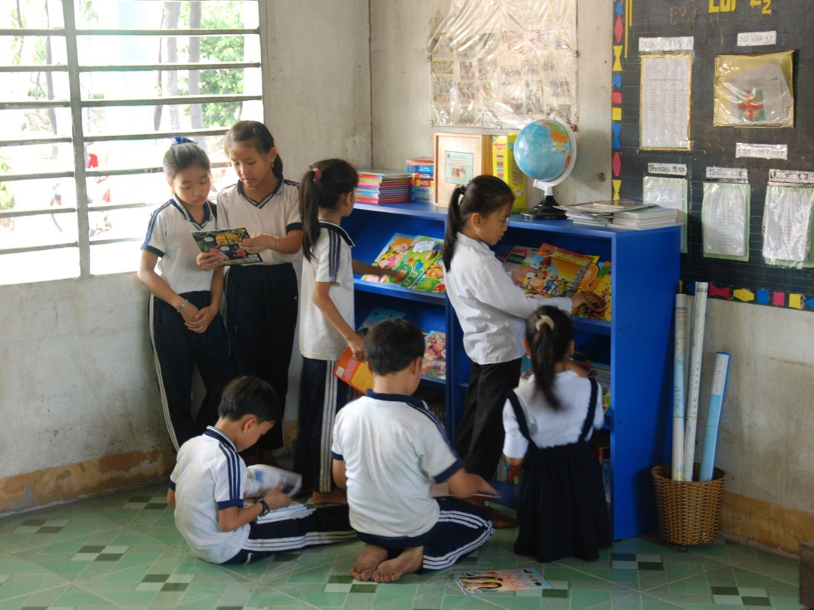
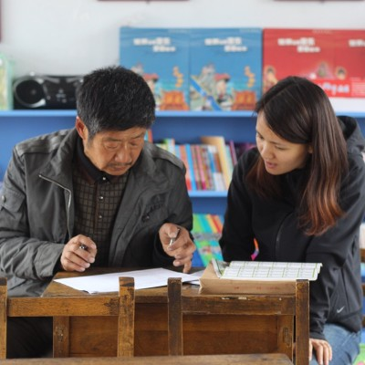
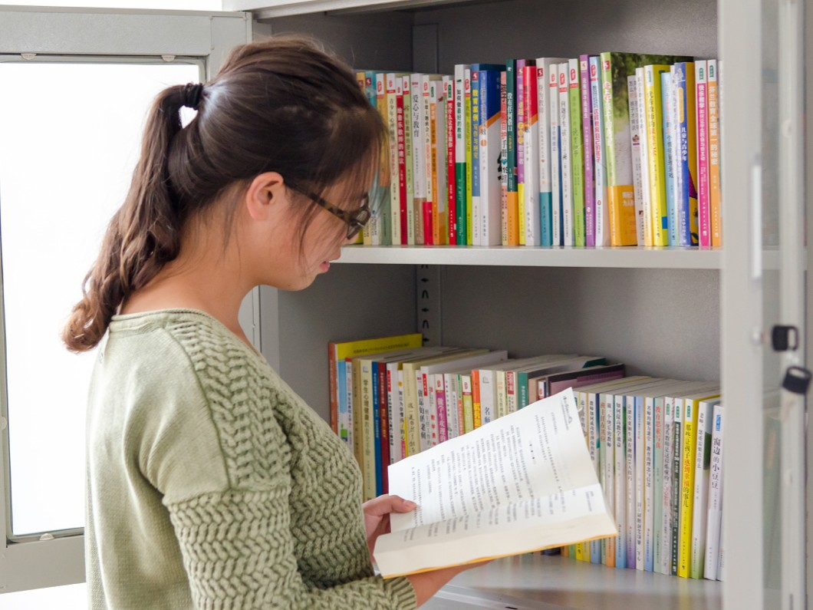
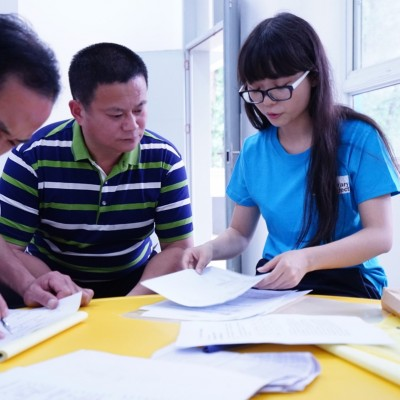

Reading Rooms for schools
The Library Project donates local language libraries to improve children’s literacy. Children gain access to a beautiful school library providing fun and interesting children’s books that spark their imagination and promote a lifelong love of reading.
LEARN MORE

Reading Rooms for schools
The Library Project donates local language libraries to improve children’s literacy. Children gain access to a beautiful school library providing fun and interesting children’s books that spark their imagination and promote a lifelong love of reading.
LEARN MORE

Reading Rooms for schools
The Library Project donates local language libraries to improve children’s literacy. Children gain access to a beautiful school library providing fun and interesting children’s books that spark their imagination and promote a lifelong love of reading.
LEARN MORE

Reading Rooms for schools
The Library Project donates local language libraries to improve children’s literacy. Children gain access to a beautiful school library providing fun and interesting children’s books that spark their imagination and promote a lifelong love of reading.
LEARN MORE

Reading Rooms for schools
The Library Project donates local language libraries to improve children’s literacy. Children gain access to a beautiful school library providing fun and interesting children’s books that spark their imagination and promote a lifelong love of reading.
LEARN MOREElementary Schools
We work with small elementary schools in rural communities in Asia. The schools generally only have 50-200 students in total.
These small schools exist in truly remote areas, where infrastructure is lacking. In order for us to access small schools we sometimes must drive down a narrow dirt path, up small winding roads in the mountains or take a small boat down a river.
These schools, often called satellite schools, exist so that every child has the opportunity to attend school. Without these schools, children would have to travel long distances with limited infrastructure to get to a larger school in the city center. This journey would be grueling or physically impossible. Satellite schools give children the chance to attend school daily.
But attending school alone isn’t enough. Almost 400 million students, globally, in primary and lower secondary school aren’t meeting minimum reading proficiency. The problem lies in not having access to quality educational materials.
Unfortunately, small schools are often the last ones to receive support. Governments in developing countries are working with limited budgets for social institutions. Generally, they tend to give support based on enrollment numbers. This means the centralized school in the city center receives more money and educational resources simply because they have more students.
This is where The Library Project comes in.
We donate libraries to these small, underfunded schools in rural communities. Our libraries have high quality, educational materials. All of our books are in the local language and are age appropriate for the classroom receiving a library. We donate books that promote gender equality, teach about science, engineering the environment, kindness and bravery. Our books show little girls as pirates, Kung-Fu champions and chemists. We include beautiful books that teach all students about the beautiful world in which we live.
We also conduct Literacy Programs and Teacher Training to rural elementary schools. Literacy Programs allow us to expand on our donation, to show children in rural schools just how exciting reading can be. The teachers in rural schools also receive Teacher Training, which allows them to maintain their new library. After a teacher training, children are able to take books home to read with their families.
The Library Project works with small schools to ensure that every child, no matter how remote, has access to high quality, educational resources. We provide access to quality libraries to give children the opportunity to read more often and improve their education.

GuideStar, Platinum Seal of Transparency
AmCham, Corporate Social Responsibility (CSR) Award

GreatNonprofits, 2018 Top-Rated Nonprofit